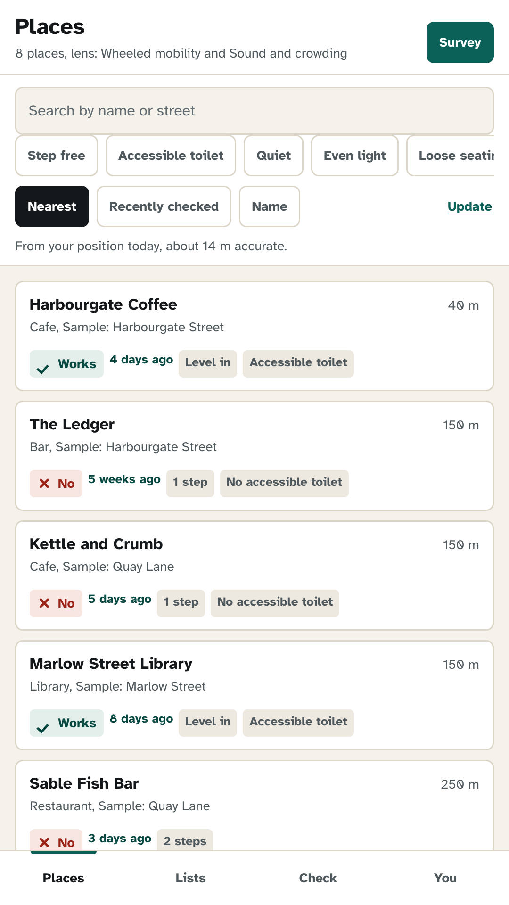
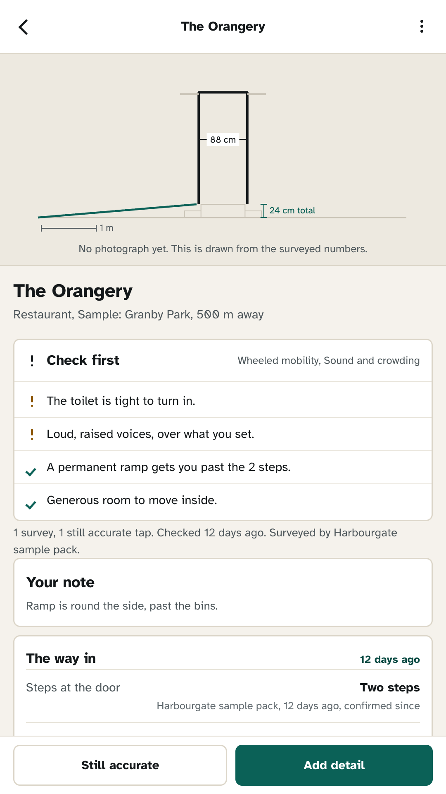
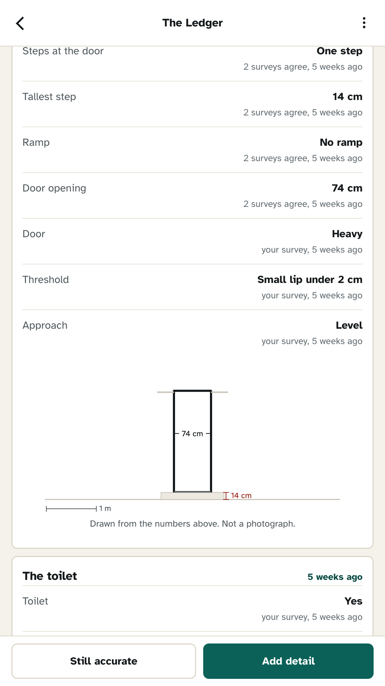

A map will tell you the coffee is good. It will not tell you there is a step at the door, that the toilet is up six stairs, or that the room is unbearable after seven. Doorway is where you keep the answers, for every place you have actually been.
Get it on Google PlayFree, no account, no ads, and no internet permission at all.

The survey
No star ratings and no free text to argue with. A survey is a short run of things a stranger can act on, and you can skip any of them. Three partial surveys of the same place compose into one listing.
Steps and the height of the tallest one, ramp or platform lift, the width of the opening, how heavy the door is, what is underfoot in the doorway, and the approach from the street.
Whether there is one at all, whether it is step free from the room, a cubicle built for wheelchair use, grab bars on one side or both, room to turn, and the width of that door too.
Room to move between the tables, whether the floor is all one level, chairs that move or fixed benches, the range of table heights, and whether there is anywhere to sit while you wait.
How loud it was, music, lighting, how busy, a quieter corner, print size on the menus, marked step edges, a hearing loop. Kept against the time of day, because that is the only way they mean anything.

Set your thresholds once. The step you can get over, the narrowest door you fit through, whether you need an accessible toilet, how much noise and crowding you can be in, what you need from the lighting and the print. Every place is then judged against those numbers, and the verdict shows its working.
WorksLevel in at the door. An accessible toilet, turning space and all.
Check firstA portable ramp, so somebody has to be there to put it out.
Does not workOne step, 14 cm, no ramp. The opening is about 74 cm.
Nobody else sees your lens. It never leaves the phone, and it is deliberately left out of anything you share.
Places change quietly. A doorway widened, a toilet turned into a store cupboard, a ramp that stopped being put out. So Doorway dates everything, counts how many surveys agree, keeps the ones that disagree instead of hiding them, and asks you to re-confirm what has aged. Marking a place still accurate takes one tap.
Where there is no photograph, the app draws the entrance to scale from the numbers that were recorded: the steps, the rise, the width of the opening, the ramp at the gradient a permanent one is built to. It is a drawing, it says so, and it is made only of things a person entered.

Map tiles need a network and this app has none. Places are a list, sorted by how far away they are when you let it read your position.
Nothing you record is uploaded, because the app cannot open a connection at all. Pooling happens when you send somebody a pack and they open it: their surveys and yours then compose place by place.
Doorway never opens the microphone. Loudness is what a person thought at the time, kept with the time of day it was thought at.
Automatic blurring needs a model this app does not carry, so it does not pretend to. You get a blur brush, and the pixels you paint over are gone before the photograph is written.
Including your own, next month, when you have forgotten.
Get it on Google Play